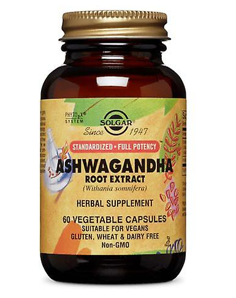
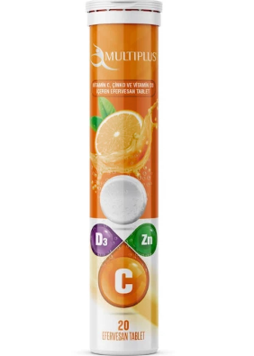

En Çok Tercih Edilen Doğal Takviyeler
Balık Yağı
- Yüksek tansiyonu düşürür.
- Eklem ağrılarını ve sertliğini azaltıcı etkisi vardır.
- Karaciğer fonksiyonlarının gelişmesine yardımcı olur.
- Kilo almaya neden olan karaciğer yağlanmasına karşı etkilidir.
- Damar tıkanıklıklarının oluşumunu engellemede etkilidir.
- Balık yağı çocuklarda dikkat eksikliği ve hiperaktivite bozukluğu gibi sorunları önlemedeye yardımcıdır.

Ashwagandha
- Bağışıklık sistemini destekler.
- Stres ve kaygıyı azaltır.
- Testesteron seviyesini arttırır.
- Kortizol seviyesini düşürür.
- Doğal iltihap giderici etkisi vardır.
- Uyku problemlerini düzeltmeye yardımcı olur.

Kalsiyum
- Kan pıhtılaşmasını önler.
- Kemik yapısını güçlendirir.
- Kan basıncını dengeler.
- Kolon kanseri riskini azaltır.

D Vitamini
- Kalsiyum ve fosfor emilimine ve kullanımına katkıda bulunur.
- Normal kemiklerin korunmasına katkıda bulunur.
- D Vitamininin hücre bölünmesinde görevi vardır.
- Normal dişlerin korunmasına katkıda bulunur.
- Kas fonksiyonunun korunmasına katkıda bulunur.
- Bağışıklık sisteminin fonksiyonuna katkıda bulunur.